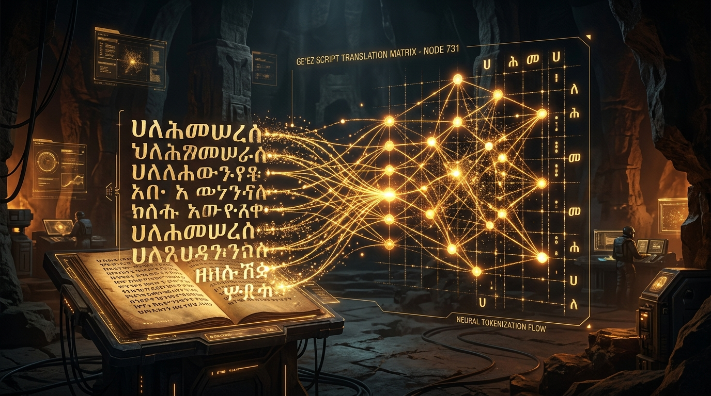
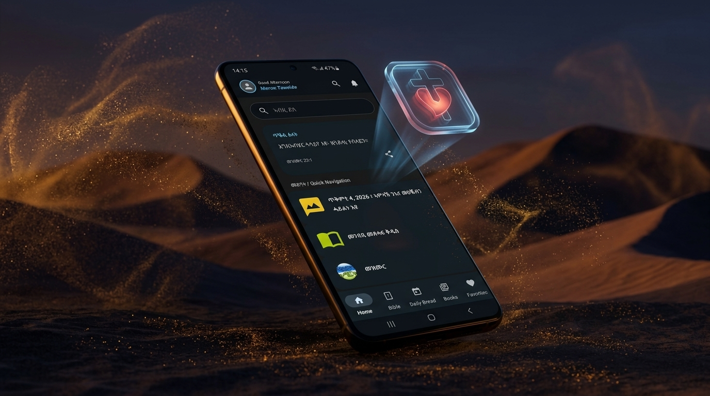
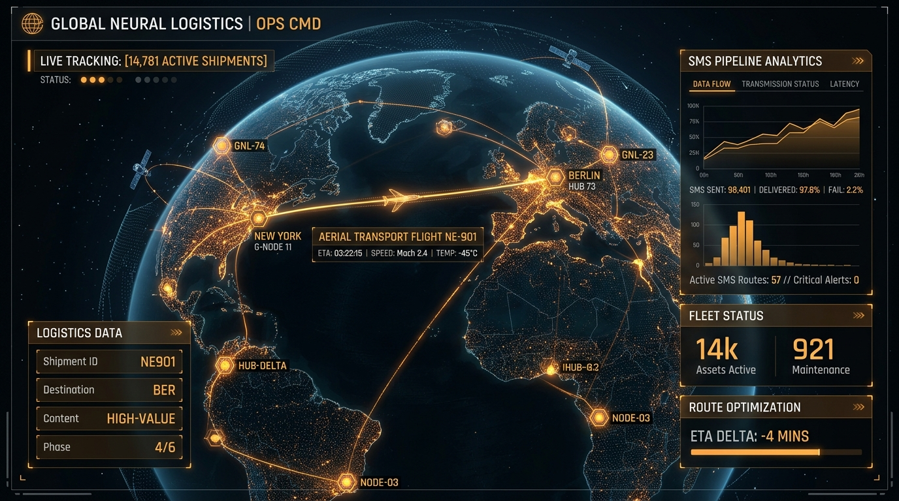
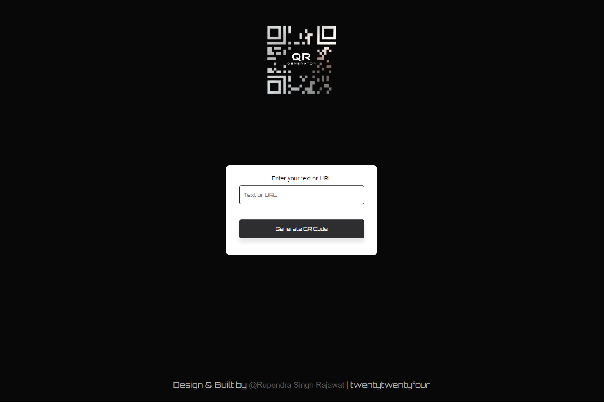

MERON GHIRMAI
TEWELDE
"The mystery of life isn't a problem to solve, but a reality to experience."
Over four years architecting resilient software systems, database infrastructures,
and neural NLP pipelines for under-resourced languages across emerging digital frontiers.
"I must not fear. Fear is the mind-killer. Fear is the little-death that brings total obliteration. I will face my fear. Where the fear has gone there will be nothing. Only I will remain."
THE OPERATIVE
Merging mathematical rigor and robust software engineering to architect resilient systems in resource-constrained environments.
Architecting Scalable Systems Across Digital Dunes
I am a data-driven IT professional and software engineer with over four years of hands-on experience in full-cycle software development, database architecture, and data infrastructure. Backed by rigorous quantitative foundations in statistics, probability, and linear algebra, I bring mathematical precision to modern software design.
My work spans from engineering enterprise-grade relational database backends to curating first-of-its-kind natural language processing corpora for under-resourced languages (such as Ge'ez and Tigrinya). Whether optimizing SQL query plans for municipal registries or architecting Online & Offline-first mobile caching pipelines, I am dedicated to crafting resilient solutions that empower communities and bridge digital divides.
MISSION CHRONICLES
A documented record of technical leadership, engineering deployments, and infrastructure optimization.
- Engineered a digital library and text-processing application tailored for the Tigrinya-speaking community to conquer severe regional connectivity constraints and complex Ge'ez script typography challenges.
- Architected an offline & Online-first infrastructure featuring local SQLite caching paired with real-time Firebase Firestore synchronization for resilient data access in low-bandwidth zones.
- Built a specialized custom image-rendering engine that rasterizes typography excerpts into shareable visual cards, maintaining pristine Ge'ez glyph ligatures.
- Architected bespoke web applications, database backends, and client-facing digital systems, ensuring strict data integrity, zero downtime, and robust security protocols.
- Engineered performant RESTful APIs and normalized relational data models in Python, Java (Spring Boot), and SQL to support client growth and digital transformation.
- Conducted end-to-end technical consultations, code reviews, and basic cybersecurity hardening assessments for client systems.
- Designed and deployed centralized relational databases (SQL / MS Access) consolidating municipal land records, land registry datasets, and environmental monitoring metrics for over 150 daily active personnel.
- Administered enterprise Windows Server infrastructure, deploying Active Directory group policies and network firewalls achieving a sustained 99.8% server uptime.
- Engineered automated query pipelines and reporting workflows to streamline routine departmental data retrieval, significantly cutting manual report generation turnaround time.
TECHNICAL ARSENAL
A synthesis of quantitative modeling, machine intelligence, scalable backend engineering, and modern infrastructure.
FEATURED ARTIFACTS
Engineered systems, AI linguistic datasets, and digital platforms built to solve real-world challenges.

Ge'ez NLP Corpus & Custom Tokenizer
Curated, cleaned, and annotated 25,000+ sentences (~350,000 tokens) from digitized historical manuscripts to support NLP research for under-resourced languages. Open-sourced on GitHub.

Mekane Hiwet Android App
A digital library and text-processing application built for the Tigrinya community with offline SQLite caching, real-time Firebase sync, and a custom Ge'ez typography rendering engine.

Eritrean Postal Service System
Co-led a 4-person engineering team digitizing legacy paper workflows across 14 branches. Engineered relational database and SMS pipeline streamlining 5,000+ monthly shipments.

Dynamic QR Code Engine
Modern web utility allowing instant generation of customized QR codes for marketing campaigns, digital content, and inventory tracking with instant high-res vector downloads.
Cinematic Streaming Interface
Pixel-accurate web recreation of modern streaming architectures featuring responsive media carousels, hero backdrops, and fluid entertainment UI interactions.
Atmospheric Weather App
Real-time atmospheric telemetry web application providing live barometric pressure, temperatures, wind vectors, and meteorological forecasts via asynchronous REST APIs.
ACADEMIC FOUNDATIONS
Advanced training in mathematical sciences, machine intelligence, and computer systems.
AIMS South Africa — AI/ML Program
Selected for the intensive track in Artificial Intelligence and Machine Learning foundations, complemented by rigorous Google DeepMind coursework in AI Research Foundations and Language Model Training.
B.Sc. in Computer Science (GPA 3.82 / 4.00)
Graduated with high honors. Completed rigorous quantitative and computational curriculum focusing on algorithm design, systems software, and distributed databases.
Linguistic Fluency
Passions & Disciplines
INITIATE TRANSMISSION
Open for high-impact software engineering roles, AI/ML research collaborations, and technical consulting.
Operational Coordinates
Reach out across secure frequencies. Available for remote engagements worldwide, on-site collaboration, and relocation.